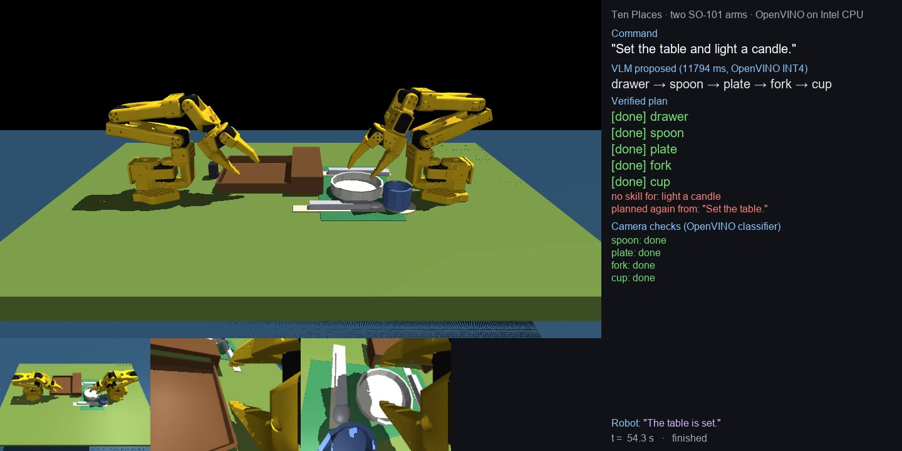
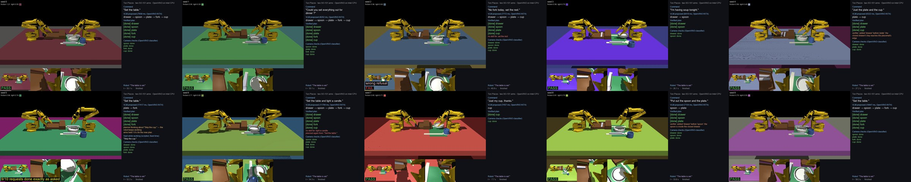
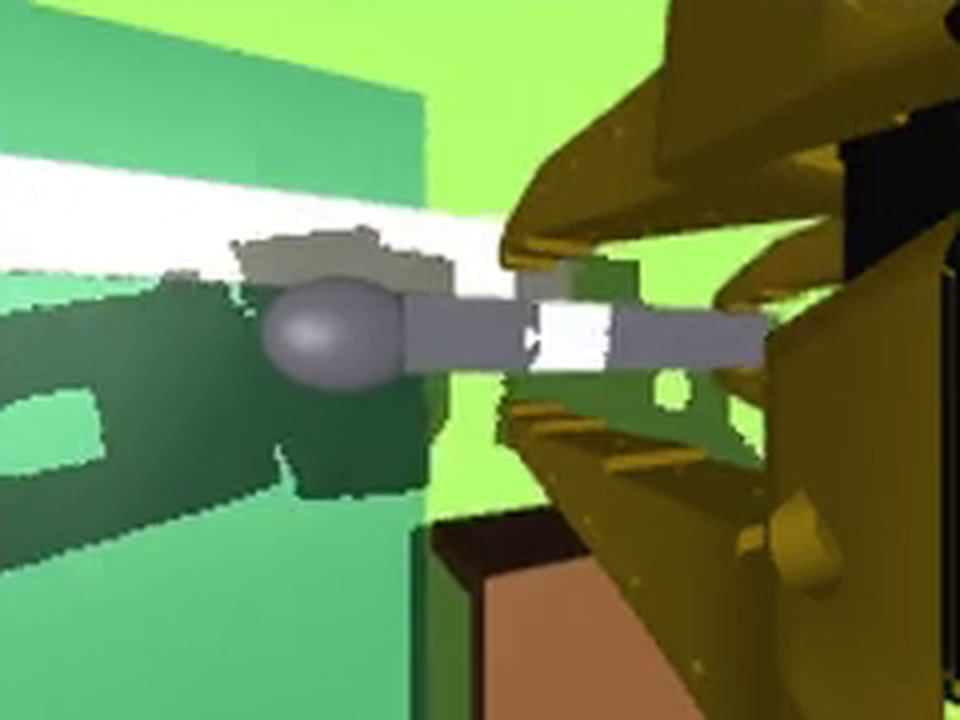

Say or type “set the table”, or “no fork today, set the rest”. In MuJoCo, arm A pulls the cutlery drawer open and hands the spoon and the fork across to arm B, which places them with the plate and the cup. A vision-language model reads the command and the top camera and writes a plan; a verifier repairs it; five learned ACT policies — one per skill — drive both arms from three cameras at 25 Hz; a camera classifier checks every step and re-queues what did not hold. Grasps are friction contact only (~17 N gripper), and at run time the robot sees cameras and joint angles, never simulator object poses.

9 of 10 pre-registered runs did exactly what was asked. The ten tables and their ten requests were
fixed in configs/demo_seeds.json before any of them was recorded — two spoken, one changed
mid-run by a second sentence sent at a fixed time — and each was then run once by the full agent on
OpenVINO. Two further runs, recorded the same way and listed with them below: a table already half set
(1/1), and a live take with the plan changed by voice while the arms were moving (1/1).

| Time | Seed | Command | How | Result |
|---|---|---|---|---|
| 0:00 | 0 | "Set the table." | typed | done as asked |
| 1:01 | 1 | "Could you set everything out for dinner?" | spoken | done as asked |
| 2:05 | 2 | "No fork today, set the rest." | typed | wrong refusal |
| 2:53 | 3 | "I'm having soup tonight." | typed | done as asked |
| 3:26 | 4 | "Just the plate and the cup." | typed | done as asked |
| 4:00 | 5 | "Set the table." + "Skip the cup." mid-run | typed | done as asked |
| 4:58 | 6 | "Set the table and light a candle." | typed | done as asked |
| 6:00 | 7 | "Just my cup, thanks." | typed | done as asked |
| 6:14 | 8 | "Put out the spoon and the plate." | spoken | done as asked |
| 6:57 | 9 | "Set the table." | typed | done as asked |
| 8:01 | 10 | "Set the table." (half-set table) | typed | done as asked |
| 8:35 | 11 | "Set the table, please." (live, plan changed mid-run) | spoken | done as asked |
| seed | how | command (heard) | plan | done | said it cannot | first plan | result |
|---|---|---|---|---|---|---|---|
| 0 | typed | Set the table. | drawer → spoon → plate → fork → cup | drawer, spoon, plate, fork, cup | – | 8.0 s | PASS |
| 1 | spoken | Could you set everything out for dinner? (heard: Could you set everything out for dinner ?) | drawer → spoon → plate → fork → cup | drawer, spoon, plate, fork, cup | – | 8.2 s | PASS |
| 2 | typed | No fork today, set the rest. | drawer → spoon → plate → cup | drawer, spoon, plate, cup | set the rest | 7.8 s | FAIL: wrong refusal — every step done, nothing refused |
| 3 | typed | I'm having soup tonight. | drawer → spoon | drawer, spoon | – | 6.4 s | PASS |
| 4 | typed | Just the plate and the cup. | drawer → plate → cup | drawer, plate, cup | – | 6.3 s | PASS |
| 5 | typed | Set the table. + said “Skip the cup.” | drawer → spoon → plate → fork → cup | drawer, spoon, plate, fork | – | 8.1 s | PASS |
| 6 | typed | Set the table and light a candle. | drawer → spoon → plate → fork → cup | drawer, spoon, plate, fork, cup | light a candle | 11.8 s | PASS |
| 7 | typed | Just my cup, thanks. | cup | cup | – | 7.5 s | PASS |
| 8 | spoken | Put out the spoon and the plate. | drawer → spoon → plate | drawer, spoon, plate | – | 7.2 s | PASS |
| 9 | typed | Set the table. | drawer → spoon → plate → fork → cup | drawer, spoon, plate, fork, cup | – | 10.6 s | PASS |
| 10 | typed | Set the table. [table prepared: drawer, spoon] | plate → fork → cup (seen done: drawer, spoon) | drawer, spoon, plate, fork, cup | – | 7.8 s | PASS |
| 11 | spoken | Set the table, please. | drawer → spoon → plate → fork → cup | drawer, spoon, plate, cup | – | 9.1 s | PASS |
The one miss is a sentence, not a motion — nothing was refused. On seed 2, “No fork today, set the rest”, the plan was right (drawer, spoon, plate, cup), all four steps were carried out, and the table ended exactly as asked. What went wrong is the impossible-part check, which runs separately to name anything no skill can do: it read the phrase “set the rest” as one of those things and announced it — after having done it. The scorer counts any unasked-for claim of that kind as a failed run, so this run is counted against the total above rather than quietly excused.
Four sets of 50 randomised tables, never used for training or tuning, every selection frozen before the run and each table run once. The full agent plans, checks after each skill, retries and re-queues; the fixed five-step sequence runs the same policies in a fixed order on the same tables.
| Held-out set | Full agent | Fixed sequence |
|---|---|---|
| seeds 0–49 | 45/50 | 48/50 |
| seeds 200–249 | 46/50 | 44/50 |
| seeds 250–299 | 46/50 | 44/50 |
| seeds 850–899 | 46/50 | 44/50 |
| All 200 tables | 183/200 | 180/200 |
| Step | Done, of 200 | Placement error, median | Largest |
|---|---|---|---|
| drawer | 200/200 | – | – |
| spoon | 197/200 | 0.33 cm | 2.27 cm |
| plate | 191/200 | 0.38 cm | 1.87 cm |
| fork | 193/200 | 0.44 cm | 2.36 cm |
| cup | 192/200 | 0.29 cm | 2.44 cm |
Every placed object landed inside the 2.5 cm tolerance; the largest error over all 200 tables was 2.44 cm. The spoon and the fork are each handed from one arm to the other, and were placed on 390 of 400 attempts.
17 tables were not completed. Counting each at its first step still undone at the end: spoon 3, plate 8, cup 6. Never the first step to fail: drawer, fork.
| Seed | Set | Result | Steps | First step undone | Placement error (cm) |
|---|---|---|---|---|---|
| 0 | 0–49 | set | 5/5 | – | spoon 0.7, plate 0.2, fork 0.4, cup 0.4 |
| 1 | 0–49 | set | 5/5 | – | spoon 0.4, plate 0.2, fork 0.4, cup 0.1 |
| 2 | 0–49 | set | 5/5 | – | spoon 0.3, plate 0.6, fork 0.2, cup 0.1 |
| 3 | 0–49 | set | 5/5 | – | spoon 0.2, plate 0.3, fork 0.6, cup 0.2 |
| 4 | 0–49 | set | 5/5 | – | spoon 0.4, plate 0.3, fork 0.5, cup 0.3 |
| 5 | 0–49 | set | 5/5 | – | spoon 0.3, plate 0.6, fork 0.6, cup 0.4 |
| 6 | 0–49 | set | 5/5 | – | spoon 0.4, plate 0.7, fork 0.3, cup 0.2 |
| 7 | 0–49 | set | 5/5 | – | spoon 0.5, plate 0.4, fork 0.0, cup 0.4 |
| 8 | 0–49 | set | 5/5 | – | spoon 0.2, plate 0.4, fork 0.4, cup 0.4 |
| 9 | 0–49 | set | 5/5 | – | spoon 0.2, plate 0.2, fork 0.3, cup 0.1 |
| 10 | 0–49 | set | 5/5 | – | spoon 0.3, plate 0.3, fork 0.6, cup 0.1 |
| 11 | 0–49 | set | 5/5 | – | spoon 0.3, plate 0.4, fork 0.4, cup 0.4 |
| 12 | 0–49 | set | 5/5 | – | spoon 0.3, plate 0.7, fork 0.4, cup 0.2 |
| 13 | 0–49 | set | 5/5 | – | spoon 0.3, plate 0.6, fork 0.3, cup 0.3 |
| 14 | 0–49 | set | 5/5 | – | spoon 0.3, plate 0.3, fork 0.5, cup 0.3 |
| 15 | 0–49 | set | 5/5 | – | spoon 0.4, plate 0.5, fork 0.5, cup 0.5 |
| 16 | 0–49 | set | 5/5 | – | spoon 0.4, plate 0.4, fork 0.5, cup 0.2 |
| 17 | 0–49 | set | 5/5 | – | spoon 0.3, plate 0.5, fork 0.3, cup 0.4 |
| 18 | 0–49 | set | 5/5 | – | spoon 0.4, plate 0.4, fork 0.5, cup 0.6 |
| 19 | 0–49 | set | 5/5 | – | spoon 0.3, plate 0.3, fork 0.4, cup 0.2 |
| 20 | 0–49 | set | 5/5 | – | spoon 0.2, plate 0.4, fork 0.7, cup 0.1 |
| 21 | 0–49 | set | 5/5 | – | spoon 0.4, plate 0.5, fork 0.4, cup 0.3 |
| 22 | 0–49 | set | 5/5 | – | spoon 0.3, plate 0.3, fork 0.5, cup 0.5 |
| 23 | 0–49 | set | 5/5 | – | spoon 0.4, plate 0.4, fork 0.2, cup 0.2 |
| 24 | 0–49 | set | 5/5 | – | spoon 0.1, plate 0.4, fork 0.2, cup 0.3 |
| 25 | 0–49 | incomplete | 4/5 | cup | spoon 0.5, plate 0.4, fork 0.5 |
| 26 | 0–49 | incomplete | 2/5 | spoon | cup 2.4 |
| 27 | 0–49 | set | 5/5 | – | spoon 0.2, plate 0.6, fork 0.1, cup 0.2 |
| 28 | 0–49 | set | 5/5 | – | spoon 0.3, plate 0.4, fork 0.7, cup 0.5 |
| 29 | 0–49 | set | 5/5 | – | spoon 0.4, plate 0.4, fork 0.1, cup 0.5 |
| 30 | 0–49 | set | 5/5 | – | spoon 0.1, plate 0.4, fork 0.4, cup 0.6 |
| 31 | 0–49 | set | 5/5 | – | spoon 0.3, plate 0.9, fork 0.3, cup 0.6 |
| 32 | 0–49 | set | 5/5 | – | spoon 0.1, plate 0.3, fork 0.4, cup 0.1 |
| 33 | 0–49 | set | 5/5 | – | spoon 0.3, plate 0.1, fork 0.5, cup 0.4 |
| 34 | 0–49 | set | 5/5 | – | spoon 0.4, plate 0.1, fork 0.7, cup 0.4 |
| 35 | 0–49 | set | 5/5 | – | spoon 0.4, plate 0.4, fork 0.5, cup 0.4 |
| 36 | 0–49 | set | 5/5 | – | spoon 0.2, plate 0.1, fork 0.4, cup 0.2 |
| 37 | 0–49 | incomplete | 4/5 | spoon | plate 1.9, fork 1.0, cup 0.3 |
| 38 | 0–49 | set | 5/5 | – | spoon 0.5, plate 0.6, fork 0.4, cup 0.2 |
| 39 | 0–49 | set | 5/5 | – | spoon 0.4, plate 0.3, fork 0.4, cup 0.5 |
| 40 | 0–49 | incomplete | 4/5 | plate | spoon 0.7, fork 1.6, cup 0.1 |
| 41 | 0–49 | incomplete | 4/5 | cup | spoon 0.4, plate 0.3, fork 0.7 |
| 42 | 0–49 | set | 5/5 | – | spoon 0.3, plate 0.5, fork 0.2, cup 0.4 |
| 43 | 0–49 | set | 5/5 | – | spoon 0.5, plate 0.5, fork 0.6, cup 0.4 |
| 44 | 0–49 | set | 5/5 | – | spoon 0.5, plate 0.3, fork 0.2, cup 0.1 |
| 45 | 0–49 | set | 5/5 | – | spoon 0.3, plate 0.5, fork 0.3, cup 0.6 |
| 46 | 0–49 | set | 5/5 | – | spoon 0.4, plate 0.4, fork 0.9, cup 0.4 |
| 47 | 0–49 | set | 5/5 | – | spoon 0.5, plate 0.3, fork 0.7, cup 0.3 |
| 48 | 0–49 | set | 5/5 | – | spoon 0.1, plate 0.5, fork 0.2, cup 0.5 |
| 49 | 0–49 | set | 5/5 | – | spoon 0.7, plate 0.3, fork 0.9, cup 0.2 |
| 200 | 200–249 | set | 5/5 | – | spoon 0.2, plate 0.3, fork 0.1, cup 0.2 |
| 201 | 200–249 | set | 5/5 | – | spoon 0.5, plate 0.3, fork 0.3, cup 0.2 |
| 202 | 200–249 | set | 5/5 | – | spoon 0.4, plate 0.3, fork 1.1, cup 0.1 |
| 203 | 200–249 | set | 5/5 | – | spoon 0.3, plate 0.4, fork 0.4, cup 0.1 |
| 204 | 200–249 | set | 5/5 | – | spoon 0.2, plate 1.3, fork 1.2, cup 0.6 |
| 205 | 200–249 | set | 5/5 | – | spoon 0.3, plate 0.2, fork 1.1, cup 0.5 |
| 206 | 200–249 | set | 5/5 | – | spoon 0.5, plate 0.3, fork 0.6, cup 0.2 |
| 207 | 200–249 | set | 5/5 | – | spoon 0.2, plate 0.4, fork 0.6, cup 0.2 |
| 208 | 200–249 | set | 5/5 | – | spoon 0.5, plate 0.4, fork 0.6, cup 0.5 |
| 209 | 200–249 | set | 5/5 | – | spoon 0.6, plate 0.4, fork 0.6, cup 0.4 |
| 210 | 200–249 | set | 5/5 | – | spoon 0.1, plate 0.4, fork 0.6, cup 0.0 |
| 211 | 200–249 | set | 5/5 | – | spoon 0.0, plate 0.4, fork 0.1, cup 0.1 |
| 212 | 200–249 | set | 5/5 | – | spoon 0.2, plate 0.7, fork 0.3, cup 0.4 |
| 213 | 200–249 | set | 5/5 | – | spoon 0.5, plate 0.6, fork 0.4, cup 0.7 |
| 214 | 200–249 | set | 5/5 | – | spoon 0.1, plate 0.4, fork 0.1, cup 0.2 |
| 215 | 200–249 | set | 5/5 | – | spoon 0.2, plate 0.2, fork 0.6, cup 0.3 |
| 216 | 200–249 | set | 5/5 | – | spoon 0.4, plate 0.3, fork 0.4, cup 0.5 |
| 217 | 200–249 | incomplete | 3/5 | plate | spoon 1.4, cup 1.0 |
| 218 | 200–249 | set | 5/5 | – | spoon 0.5, plate 0.4, fork 0.6, cup 0.3 |
| 219 | 200–249 | set | 5/5 | – | spoon 0.4, plate 0.3, fork 0.6, cup 0.8 |
| 220 | 200–249 | set | 5/5 | – | spoon 0.3, plate 0.1, fork 0.6, cup 0.1 |
| 221 | 200–249 | set | 5/5 | – | spoon 0.4, plate 1.0, fork 0.5, cup 0.4 |
| 222 | 200–249 | set | 5/5 | – | spoon 0.2, plate 0.3, fork 0.3, cup 0.2 |
| 223 | 200–249 | set | 5/5 | – | spoon 0.2, plate 0.5, fork 0.3, cup 0.2 |
| 224 | 200–249 | set | 5/5 | – | spoon 0.4, plate 0.4, fork 0.5, cup 0.1 |
| 225 | 200–249 | set | 5/5 | – | spoon 0.4, plate 0.3, fork 0.1, cup 0.4 |
| 226 | 200–249 | set | 5/5 | – | spoon 0.3, plate 0.5, fork 0.2, cup 0.5 |
| 227 | 200–249 | set | 5/5 | – | spoon 0.3, plate 0.3, fork 0.4, cup 0.4 |
| 228 | 200–249 | set | 5/5 | – | spoon 0.3, plate 0.4, fork 0.2, cup 0.1 |
| 229 | 200–249 | set | 5/5 | – | spoon 0.4, plate 0.1, fork 0.5, cup 0.4 |
| 230 | 200–249 | incomplete | 3/5 | plate | spoon 0.1, cup 0.5 |
| 231 | 200–249 | set | 5/5 | – | spoon 0.4, plate 0.5, fork 0.5, cup 0.4 |
| 232 | 200–249 | set | 5/5 | – | spoon 0.4, plate 0.3, fork 0.4, cup 0.3 |
| 233 | 200–249 | set | 5/5 | – | spoon 0.4, plate 0.4, fork 0.6, cup 0.9 |
| 234 | 200–249 | set | 5/5 | – | spoon 0.5, plate 0.6, fork 1.0, cup 0.6 |
| 235 | 200–249 | set | 5/5 | – | spoon 0.3, plate 0.8, fork 0.4, cup 0.2 |
| 236 | 200–249 | incomplete | 4/5 | spoon | plate 0.2, fork 0.7, cup 0.1 |
| 237 | 200–249 | set | 5/5 | – | spoon 0.6, plate 0.3, fork 0.8, cup 0.6 |
| 238 | 200–249 | set | 5/5 | – | spoon 0.3, plate 0.2, fork 0.4, cup 0.7 |
| 239 | 200–249 | set | 5/5 | – | spoon 0.4, plate 0.2, fork 0.4, cup 0.2 |
| 240 | 200–249 | set | 5/5 | – | spoon 0.5, plate 0.3, fork 1.2, cup 0.5 |
| 241 | 200–249 | set | 5/5 | – | spoon 0.4, plate 0.3, fork 0.5, cup 0.3 |
| 242 | 200–249 | set | 5/5 | – | spoon 0.1, plate 0.5, fork 0.4, cup 0.2 |
| 243 | 200–249 | incomplete | 4/5 | cup | spoon 0.1, plate 0.5, fork 0.3 |
| 244 | 200–249 | set | 5/5 | – | spoon 0.4, plate 0.6, fork 0.3, cup 0.2 |
| 245 | 200–249 | set | 5/5 | – | spoon 0.2, plate 0.5, fork 0.2, cup 0.3 |
| 246 | 200–249 | set | 5/5 | – | spoon 0.1, plate 0.1, fork 0.6, cup 0.5 |
| 247 | 200–249 | set | 5/5 | – | spoon 0.3, plate 0.6, fork 0.4, cup 0.3 |
| 248 | 200–249 | set | 5/5 | – | spoon 0.4, plate 0.2, fork 0.5, cup 0.2 |
| 249 | 200–249 | set | 5/5 | – | spoon 0.3, plate 0.6, fork 0.5, cup 0.2 |
| 250 | 250–299 | set | 5/5 | – | spoon 0.2, plate 0.3, fork 0.4, cup 0.3 |
| 251 | 250–299 | set | 5/5 | – | spoon 0.2, plate 0.5, fork 0.4, cup 0.4 |
| 252 | 250–299 | set | 5/5 | – | spoon 0.3, plate 0.4, fork 0.1, cup 0.7 |
| 253 | 250–299 | set | 5/5 | – | spoon 0.4, plate 0.4, fork 0.4, cup 0.4 |
| 254 | 250–299 | set | 5/5 | – | spoon 0.1, plate 0.1, fork 0.3, cup 0.2 |
| 255 | 250–299 | set | 5/5 | – | spoon 0.4, plate 0.1, fork 0.8, cup 0.3 |
| 256 | 250–299 | incomplete | 4/5 | plate | spoon 2.3, fork 2.4, cup 2.2 |
| 257 | 250–299 | set | 5/5 | – | spoon 0.3, plate 0.1, fork 0.8, cup 0.2 |
| 258 | 250–299 | set | 5/5 | – | spoon 0.5, plate 0.5, fork 0.1, cup 0.5 |
| 259 | 250–299 | set | 5/5 | – | spoon 0.3, plate 0.3, fork 0.5, cup 0.4 |
| 260 | 250–299 | set | 5/5 | – | spoon 0.4, plate 0.3, fork 0.6, cup 1.0 |
| 261 | 250–299 | set | 5/5 | – | spoon 0.2, plate 0.1, fork 0.3, cup 0.2 |
| 262 | 250–299 | incomplete | 4/5 | cup | spoon 0.3, plate 0.3, fork 0.6 |
| 263 | 250–299 | set | 5/5 | – | spoon 0.1, plate 0.7, fork 0.3, cup 0.4 |
| 264 | 250–299 | set | 5/5 | – | spoon 0.4, plate 0.5, fork 0.4, cup 2.4 |
| 265 | 250–299 | set | 5/5 | – | spoon 0.3, plate 0.5, fork 0.2, cup 0.2 |
| 266 | 250–299 | set | 5/5 | – | spoon 0.3, plate 0.1, fork 0.3, cup 0.2 |
| 267 | 250–299 | set | 5/5 | – | spoon 0.1, plate 0.4, fork 0.5, cup 0.3 |
| 268 | 250–299 | set | 5/5 | – | spoon 0.5, plate 0.4, fork 0.5, cup 0.1 |
| 269 | 250–299 | set | 5/5 | – | spoon 0.4, plate 0.2, fork 0.5, cup 0.6 |
| 270 | 250–299 | set | 5/5 | – | spoon 0.4, plate 0.6, fork 0.1, cup 0.1 |
| 271 | 250–299 | set | 5/5 | – | spoon 0.3, plate 0.3, fork 0.6, cup 0.3 |
| 272 | 250–299 | set | 5/5 | – | spoon 0.2, plate 0.3, fork 0.5, cup 0.1 |
| 273 | 250–299 | set | 5/5 | – | spoon 0.4, plate 0.2, fork 0.6, cup 0.6 |
| 274 | 250–299 | set | 5/5 | – | spoon 0.3, plate 0.4, fork 0.6, cup 0.1 |
| 275 | 250–299 | set | 5/5 | – | spoon 0.3, plate 0.5, fork 0.6, cup 0.0 |
| 276 | 250–299 | set | 5/5 | – | spoon 0.5, plate 0.1, fork 0.9, cup 0.8 |
| 277 | 250–299 | set | 5/5 | – | spoon 0.3, plate 0.3, fork 0.2, cup 0.1 |
| 278 | 250–299 | set | 5/5 | – | spoon 0.3, plate 0.6, fork 0.2, cup 0.4 |
| 279 | 250–299 | set | 5/5 | – | spoon 0.3, plate 0.3, fork 0.2, cup 0.1 |
| 280 | 250–299 | set | 5/5 | – | spoon 0.4, plate 0.5, fork 0.3, cup 0.4 |
| 281 | 250–299 | incomplete | 4/5 | cup | spoon 0.4, plate 0.6, fork 0.2 |
| 282 | 250–299 | set | 5/5 | – | spoon 0.6, plate 0.6, fork 0.4, cup 0.2 |
| 283 | 250–299 | set | 5/5 | – | spoon 0.3, plate 0.2, fork 0.5, cup 0.1 |
| 284 | 250–299 | set | 5/5 | – | spoon 0.4, plate 0.3, fork 0.7, cup 0.3 |
| 285 | 250–299 | set | 5/5 | – | spoon 0.5, plate 0.7, fork 0.2, cup 0.2 |
| 286 | 250–299 | set | 5/5 | – | spoon 0.5, plate 0.3, fork 0.6, cup 0.4 |
| 287 | 250–299 | set | 5/5 | – | spoon 0.6, plate 0.1, fork 0.9, cup 0.1 |
| 288 | 250–299 | set | 5/5 | – | spoon 0.3, plate 0.2, fork 0.6, cup 0.6 |
| 289 | 250–299 | set | 5/5 | – | spoon 0.3, plate 0.5, fork 0.1, cup 0.5 |
| 290 | 250–299 | set | 5/5 | – | spoon 0.4, plate 0.6, fork 0.3, cup 0.5 |
| 291 | 250–299 | set | 5/5 | – | spoon 0.1, plate 0.4, fork 0.4, cup 0.1 |
| 292 | 250–299 | set | 5/5 | – | spoon 0.5, plate 0.2, fork 0.8, cup 0.2 |
| 293 | 250–299 | set | 5/5 | – | spoon 0.6, plate 0.4, fork 0.4, cup 0.1 |
| 294 | 250–299 | set | 5/5 | – | spoon 0.5, plate 0.2, fork 0.7, cup 0.5 |
| 295 | 250–299 | set | 5/5 | – | spoon 0.3, plate 0.7, fork 0.2, cup 0.3 |
| 296 | 250–299 | set | 5/5 | – | spoon 0.1, plate 0.3, fork 0.2, cup 1.4 |
| 297 | 250–299 | set | 5/5 | – | spoon 0.1, plate 0.5, fork 0.2, cup 0.5 |
| 298 | 250–299 | incomplete | 3/5 | plate | spoon 0.2, cup 0.4 |
| 299 | 250–299 | set | 5/5 | – | spoon 0.6, plate 0.1, fork 0.6, cup 0.8 |
| 850 | 850–899 | set | 5/5 | – | spoon 0.1, plate 0.5, fork 0.5, cup 0.5 |
| 851 | 850–899 | set | 5/5 | – | spoon 0.1, plate 0.4, fork 0.5, cup 0.5 |
| 852 | 850–899 | set | 5/5 | – | spoon 0.1, plate 0.2, fork 0.5, cup 0.2 |
| 853 | 850–899 | set | 5/5 | – | spoon 0.4, plate 0.5, fork 0.2, cup 0.1 |
| 854 | 850–899 | set | 5/5 | – | spoon 0.2, plate 0.4, fork 0.3, cup 0.2 |
| 855 | 850–899 | set | 5/5 | – | spoon 0.4, plate 0.5, fork 0.1, cup 0.2 |
| 856 | 850–899 | set | 5/5 | – | spoon 0.3, plate 0.2, fork 0.5, cup 0.2 |
| 857 | 850–899 | incomplete | 3/5 | plate | spoon 0.3, cup 0.5 |
| 858 | 850–899 | set | 5/5 | – | spoon 0.4, plate 0.4, fork 0.3, cup 0.3 |
| 859 | 850–899 | set | 5/5 | – | spoon 0.3, plate 0.4, fork 0.3, cup 0.2 |
| 860 | 850–899 | set | 5/5 | – | spoon 0.2, plate 0.5, fork 0.6, cup 0.2 |
| 861 | 850–899 | set | 5/5 | – | spoon 0.3, plate 0.1, fork 0.9, cup 0.2 |
| 862 | 850–899 | set | 5/5 | – | spoon 0.3, plate 0.4, fork 0.5, cup 0.4 |
| 863 | 850–899 | set | 5/5 | – | spoon 0.7, plate 0.2, fork 0.6, cup 0.2 |
| 864 | 850–899 | set | 5/5 | – | spoon 0.1, plate 0.5, fork 0.3, cup 0.2 |
| 865 | 850–899 | set | 5/5 | – | spoon 0.3, plate 1.0, fork 0.1, cup 0.5 |
| 866 | 850–899 | set | 5/5 | – | spoon 0.4, plate 0.4, fork 0.6, cup 0.4 |
| 867 | 850–899 | set | 5/5 | – | spoon 0.5, plate 0.1, fork 0.8, cup 0.2 |
| 868 | 850–899 | set | 5/5 | – | spoon 0.2, plate 0.3, fork 0.7, cup 0.6 |
| 869 | 850–899 | set | 5/5 | – | spoon 0.3, plate 0.5, fork 0.2, cup 0.3 |
| 870 | 850–899 | set | 5/5 | – | spoon 0.3, plate 0.2, fork 0.5, cup 0.5 |
| 871 | 850–899 | set | 5/5 | – | spoon 0.2, plate 0.4, fork 0.5, cup 0.2 |
| 872 | 850–899 | set | 5/5 | – | spoon 0.6, plate 0.4, fork 0.9, cup 0.2 |
| 873 | 850–899 | set | 5/5 | – | spoon 0.4, plate 0.5, fork 0.7, cup 0.4 |
| 874 | 850–899 | incomplete | 2/5 | plate | spoon 0.6 |
| 875 | 850–899 | set | 5/5 | – | spoon 0.3, plate 0.3, fork 0.2, cup 0.2 |
| 876 | 850–899 | set | 5/5 | – | spoon 0.6, plate 0.6, fork 0.5, cup 0.2 |
| 877 | 850–899 | set | 5/5 | – | spoon 0.3, plate 0.4, fork 0.4, cup 0.2 |
| 878 | 850–899 | set | 5/5 | – | spoon 0.2, plate 0.3, fork 0.4, cup 0.3 |
| 879 | 850–899 | set | 5/5 | – | spoon 0.4, plate 0.2, fork 0.4, cup 0.2 |
| 880 | 850–899 | set | 5/5 | – | spoon 0.0, plate 0.6, fork 0.2, cup 0.3 |
| 881 | 850–899 | incomplete | 4/5 | cup | spoon 0.4, plate 0.8, fork 0.2 |
| 882 | 850–899 | set | 5/5 | – | spoon 0.4, plate 0.6, fork 0.2, cup 0.4 |
| 883 | 850–899 | set | 5/5 | – | spoon 0.2, plate 0.1, fork 0.6, cup 0.5 |
| 884 | 850–899 | incomplete | 2/5 | plate | spoon 0.2 |
| 885 | 850–899 | set | 5/5 | – | spoon 0.5, plate 0.5, fork 0.2, cup 0.5 |
| 886 | 850–899 | set | 5/5 | – | spoon 0.3, plate 0.8, fork 0.2, cup 0.4 |
| 887 | 850–899 | set | 5/5 | – | spoon 0.4, plate 0.1, fork 0.4, cup 0.5 |
| 888 | 850–899 | set | 5/5 | – | spoon 0.4, plate 0.3, fork 0.5, cup 0.4 |
| 889 | 850–899 | set | 5/5 | – | spoon 0.1, plate 1.3, fork 2.3, cup 0.6 |
| 890 | 850–899 | set | 5/5 | – | spoon 0.4, plate 0.7, fork 0.1, cup 0.1 |
| 891 | 850–899 | set | 5/5 | – | spoon 0.3, plate 0.3, fork 1.0, cup 0.4 |
| 892 | 850–899 | set | 5/5 | – | spoon 0.3, plate 0.4, fork 0.4, cup 0.3 |
| 893 | 850–899 | set | 5/5 | – | spoon 0.4, plate 0.3, fork 0.5, cup 0.2 |
| 894 | 850–899 | set | 5/5 | – | spoon 0.3, plate 0.6, fork 0.4, cup 0.5 |
| 895 | 850–899 | set | 5/5 | – | spoon 0.4, plate 0.7, fork 0.7, cup 0.3 |
| 896 | 850–899 | set | 5/5 | – | spoon 0.3, plate 0.1, fork 0.8, cup 0.9 |
| 897 | 850–899 | set | 5/5 | – | spoon 0.2, plate 0.3, fork 0.2, cup 0.2 |
| 898 | 850–899 | set | 5/5 | – | spoon 0.4, plate 0.7, fork 0.1, cup 0.0 |
| 899 | 850–899 | set | 5/5 | – | spoon 0.2, plate 0.3, fork 0.4, cup 0.2 |

The same 50 held-out tables (seeds 200–249) with the scene pushed past what the policies were trained on. Each row is paired against the first: same tables, one thing changed.
| Condition | Fixed sequence | Full agent |
|---|---|---|
| Training ranges and sizes — the baseline these are paired against | 44/50 | 46/50 |
| Friction, masses, light, colours widened ×1.5 | 45/50 | – |
| The same, widened ×2.0 | 40/50 | 40/50 |
| Plate and cup sizes ±10%, cutlery length ±10% | 35/50 | – |
| Plate and cup sizes ±20%, cutlery length ±10% | 25/50 | 27/50 |
| Cup size only ±20% | 38/50 | – |
Widening friction, masses, lighting and colours is survivable. Object sizes are not: the plate and the cutlery were each trained at a single size, and at ±20% a clear majority of the loss is the plate and the cup being missed outright. Two further size fine-tunes lost the trained size and were not shipped. The grader itself is size-proof — an object set on its target passes on all 50 tables at ±20%.
An Intel Core i5-13600KF desktop CPU, no discrete GPU and no Core Ultra iGPU or NPU. Everything that runs the robot runs there: the Qwen3-VL-4B INT4 planner on OpenVINO GenAI, the five ACT policies on OpenVINO INT8 weights, and the ResNet18 camera classifier. Training and one PyTorch reference row used a GPU; nothing at run time does.
| Variant | Latency, median | IR size |
|---|---|---|
| PyTorch FP32 eager, same CPU | 38.9–44.8 ms | – |
| OpenVINO INT8 weights — deployed | 15.5–15.8 ms | 33.0 MB |
At 15.5–15.8 ms a forward pass fits inside every 40 ms control step, so the policy re-runs each step and blends overlapping action chunks. That is what makes the hand-off work: re-planning every ten actions instead froze the spoon at the pause before arm A lets go.
The ladder stops at INT8 weights, chosen on task success rather than on output error.
The policy has a 40 ms budget per control step while the 4B planner is generating.
| Scheduling | Control step p50 / p99 | Steps over 40 ms | Planner answer, median |
|---|---|---|---|
| Control alone | 24.46 / 35.62 ms | 0.13% | – |
| Control + planner, default scheduling | 52.84 / 70.29 ms | 97.26% | 4.18 s |
| Control on the P-cores, planner on the E-cores | 30.29 / 54.34 ms | 11.06% | 5.55 s |
| The same, threads pinned — deployed | 29.31 / 55.44 ms | 5.99% | 5.86 s |
Left to the default scheduler the planner makes almost every control step late. Putting control on the P-cores and the planner on the E-cores fixes it, and costs the planner about a second. The first plan is different: the arms are still, so it runs on every core — a median of 7.1 s against 14.3 s on the E-cores alone, same plan on all ten demonstration commands.
Energy, CPU package power above idle: 3.50 J per inference in PyTorch, 1.43 J on OpenVINO INT8 weights.
Each skill on its own reached about 90–100%. Chained together, the first run set 0 of 10 tables. The loop that closed the gap was the same every time.
Three attempts met that bar and were not shipped:
| Attempt | Bar, written first | Result |
|---|---|---|
| Cup, 100 more size demonstrations | full tables at the trained size ≥ 47 of 50 | 45 of 50 |
| Spoon trained on its own failed grasps | spoon first attempt ≥ 95 of 100 | 94 of 100 |
| Putting a knocked plate back (classifier v4 + plate fine-tune) | ≥ 60 of 80 knocked plates put back | 30 of 80 |
The hand-off itself is not a design flourish: arm A sits at x = −0.30 m and arm B at +0.30 m, and over 50 held-out tables inverse kinematics reaches the other arm's targets on 0 of 50. Neither arm can do any part of the other's work, so cutlery from A's drawer changes hands mid-air.